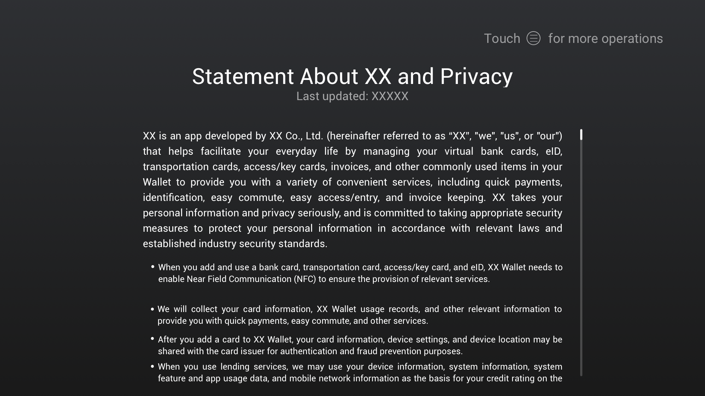
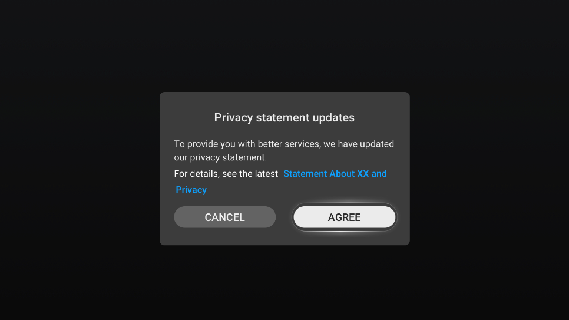
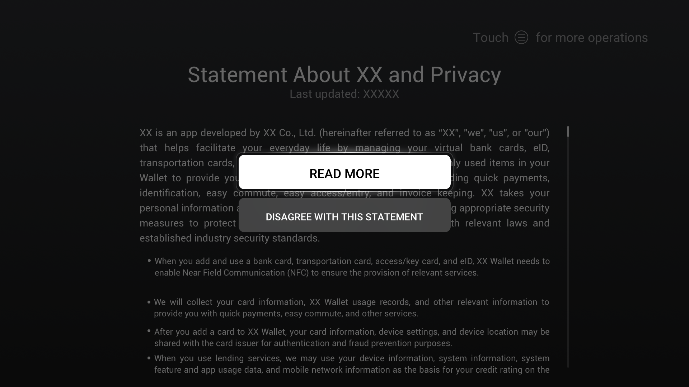
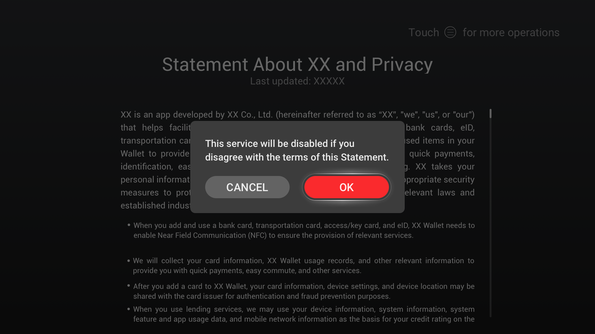

Privacy Protection¶
Overview¶
Personal data plays an increasingly important role in social economy and daily life along the development of the Internet and informatization. Meanwhile, information leakage risks are increasing. Consumer product developers shall take more effective measures to protect consumer’ personal data and improve their trust in products. To protect consumers’ privacy and improve their experience on privacy, you should set high-level privacy protection policies for your product.
Basic Concepts
Personal data
Any information relating to an identified or identifiable natural person (“Data Subject”) who can be identified, directly or indirectly, in particular by reference to an identifier such as a name, an identification number, location data, an online identifier or to one or more factors specific to the physical, physiological, genetic, mental, commercial, cultural, or social identity of that natural person. Personal data includes a natural person’s email address, phone number, biometric information (such as a fingerprint), location data, IP address, healthcare information, religious belief, social security number, marital status, and so on.
Sensitive personal data
Sensitive personal data, a critical subset of personal data, refers to the most private information of a data subject or information that may cause severe adverse impacts on a data subject once disclosed. Sensitive personal data defined in laws and regulations of EU and its members includes personal data revealing racial or ethnic origin, political opinions, religious or philosophical beliefs, trade-union membership, genetic data, biometric information, and data concerning health or sex life and sexual orientation.
With reference to industry best practices, we also define the following data related to a natural person’s identity as sensitive: bank card number, identification number, passport number, and passwords. More strict protection measures are usually required for processing sensitive personal data.
Public available personal data
Personal data that is proactively disclosed by a data subject or that can be accessed on public web pages or applications, including posts and comments made on forums.
User profile
Any form of automated processing of personal data to assess a natural person in specific aspects, and in particular to analyze and predict the natural person’s work performance, financial situation, health, personal preference, interest, creditability, behavior, and location or trace.
Data controller
A natural or legal person, public authority, agency, or any other body that, alone or jointly with others, determines the purposes and means of personal data processing.
Data processor
A natural or legal person, public authority, agency, or any other body that processes personal data on behalf of a data controller. A data processor must provide adequate protection following the data controller’s requirements.
Explicit consent
Explicit consent applies to the following scenarios where the General Data Protection Regulation (GDPR) allows the legitimate processing of personal data based on data subjects’ explicit consent:
Processing of sensitive personal data
Automated decision-making, including user profiles
Transfer of personal data to countries without an adequate level of protection, which uses consent as the legal basis
Explicit consent can be implemented as follows:
Display notification content in bold and enlarged fonts in a privacy statement, and request the data subject to give consent on the content separately.
In the collection of specific data, display a privacy statement to notify data subjects of matters related to the processing of personal data, provide a check box which is deselected by default, and prompt data subjects to proactively select the option indicating that “I agree to process my personal data in the above manner” or click the “I agree” button.
Expressly present consent in writing and request data subjects to sign it.
Ask data subjects to upload an electronic form with their signature in the system.
Adopt the double verification method by requesting data subjects to consent via an email and then re-click the email link for verification or enter the SMS verification code.
Users provide information proactively, such as scenarios where a user enters their identification number and bank card number to bind the bank card.
Data Classification¶
Data is classified into five levels: very high, high, moderate, low, and public based on the data protection objectives and consequences (the impact of legal risks caused by data leakage or damage on individuals, organizations, or the public).
Table 1 Standards for data classification
Level | Privacy Risk | Privacy Attribute | Typical Example |
|---|---|---|---|
Very high | Once data is identified or associated with an individual or group of individuals, its disclosure or improper use may have a catastrophic negative impact on that individual or group of individuals. | Sensitive personal data | DNA, racial or ethnic origin, religious belief, and sexual orientation; biometric information (such as facial recognition features, fingerprints, and voiceprints); original communication content; bank card password and track data |
High | Once data is identified or associated with an individual or group of individuals, its disclosure or improper use may have a severe negative impact on that individual or group of individuals. | Sensitive personal data | Social identity (such as ID cards and passports); web browsing history; tracks; content (such as images, audio, and video) uploaded to the cloud |
Moderate | Once data is identified or associated with an individual or group of individuals, its disclosure or improper use may have a significant negative impact on that individual or group of individuals. | General personal data | Device ID (such as IMEI, SN, and OAID) and user ID; basic personal information (name and address); mobile number and email address |
Low | Once data is identified or associated with an individual or group of individuals, its disclosure or improper use may have a limited negative impact on that individual or group of individuals. | General personal data | OS settings (including the OS version and country/region); device hardware information (device model, screen size, and screen resolution); network information (network connection status and access network information); device status (login time/duration) |
Public | Public data has no adverse impact on individuals or organizations. | Non-personal data | Publicly released product introduction, public meeting information, and external open-source code |
Note: For details about the definitions of privacy protection and data classification, see GDPR.
General Privacy Design Rules¶
To help you better complete privacy design for products, we sort out general privacy design requirements.
Openness and Transparency in Data Collection and Use
When collecting personal data, clearly and explicitly notify users of the data to collect and how their personal data will be used.
Develop specific privacy processing policies for personal data at different levels.
Explicit consent shall be obtained from the data subject before your product attempts to collect sensitive personal data.
Generally, the collection of personal data requires the consent of the data subject or other legal authorizations.
If non-personal data is to be collected in association with personal data at the moderate, high, or very high level, the data subject’s consent or other legal authorization is required, and the consent or authorization shall be presented in the privacy statement.
Develop and follow appropriate privacy policies. Comply with all applicable laws, policies, and regulations when collecting, using, retaining, and sharing users’ personal data with any third parties. Fully inform users of the types, purposes, processing methods, and retention periods of personal data to meet the requirements of data subjects’ rights.
Adhering to the preceding principles, we have designed some examples for your reference. The figure below shows an example of a privacy notice or statement.
Figure 1 Example of a dialog box showing a privacy notice or statementPersonal data shall be collected for specified, explicit, and legitimate purposes and not further processed in a manner that is incompatible with those purposes. If the purposes are changed or an individual withdraws the consent, you shall obtain user consent again before using the data. The figures below show examples of a privacy statement change and content withdrawal, respectively.
Figure 2 Example of a dialog box showing a privacy notice or statementFigure 3 Example of a dialog box showing consent withdrawal
The download or upgrade of user system software or application software may involve the modification of users’ private space. Users shall have the right to know and control such behavior. They shall be informed of such behavior and be given the option to agree or disagree with such behavior.
Minimization in Data Collection and Use
Collect personal data only when they are adequate, relevant, and limited to what is necessary in relation to the purposes for which they are processed. Apply anonymization or pseudonymization to personal data if possible to reduce the risks to the data subjects concerned. Data shall only be collected and processed for a specified purpose, and no further unnecessary operations shall be conducted on them.
When applying for sensitive permissions, comply with permission minimization and apply for only the permissions required for obtaining necessary information or resources.
Comply with data collection minimization, and do not collect data irrelevant to services provided by the product.
The functions that use personal data shall be able to benefit users. The collected data shall not be used for functions irrelevant to users’ normal use. No data shall be collected for any function irrelevant to user operations.
Data Processing Selection and Control
Consents from users shall be obtained for processing personal data and full control over the data shall be given to individuals.
When applying for a certain permission, your product shall display a pop-up window to present the permission, the purpose of using the permission, the data to collect, and the purpose of using the data. Users can choose to click or touch OK to grant the permission. In this way, permissions are granted and used in a transparent, perceivable, and controllable manner.
Users can modify or withdraw the permissions granted to your product. When an individual does not agree to a permission or data collection, the individual shall be allowed to use the functions irrelevant to the permission or data collection.
In scenarios where personal data is recorded, users shall be provided with the functions of adding, deleting, modifying, and viewing personal data.
Provide a mechanism or method for securely deleting personal data when hardware is recycled or returned to the factory.
Data Security
Data processing security shall be ensured in technical terms, which include encrypted storage and secure transmission. Security mechanisms or measures shall be enabled by default for a system.
A protection mechanism shall be available for personal data access, including identity authentication and access control. Identity authentication (such as username and password) allows only authenticated users to access data and applies to multi-user scenarios. Access control (such as permission control) can be applied to restrict access to applications.
Secure storage of personal data on distributed devices must meet Huawei Universal Keystore (HUKS) requirements, including secure storage of keys and data.
The transmission of personal data between distributed devices must meet the trust binding relationship between devices and security requirements of data transmission channels.
Authentication data (such as passwords and fingerprints) shall be encrypted before being stored.
Localization
User data shall be preferentially processed on the local device. If the local device cannot process the data, distributed devices can be used or the data can be uploaded to the cloud for processing. Data minimization shall be met. Uploading data to the cloud shall not be the default processing.
Minors’ Data Protection
If your product is designed for minors or you can identify that the end user is a minor through collected user age data, you shall particularly analyze issues related to minors’ personal data protection based on relevant national laws in the target market. Your product shall require explicit consent from the holders of parental responsibility over minors.
Privacy Protection Requirements for Special Categories¶
In addition to these general privacy requirements, consumer hardware products have the following requirements for special categories. You shall comply with these requirements during product design.
Table 2 Privacy protection requirements for special categories
Product Category | Privacy Protection Requirements |
|---|---|
Smart home | Biometric information (such as fingerprints, voiceprints, facial recognition, and irises) and user passwords involved in security products are sensitive personal data. They shall be processed using technical measures (for example, extracting the digest of biometric information) before being encrypted and stored in the products. |
Smart home | For security products that involve audio, video, and images, their manufacturers, functioning as the data controller, shall provide an independent privacy notification and a brand log on their application UI. Transmission and storage of audio and video data shall be encrypted. Users can access audio and video data of others’ security products after being authorized by the data subject. |
Smart home/Entertainment | Cameras on products shall be able to be physically disabled. For example, cameras can be hidden, covered, turned, or lighted so that consumers can perceive that the cameras are disabled. |
Smart home/Entertainment | Products with microphones shall provide an explicit display of the recording status. For example, products use a green indicator to indicate that data is being uploaded and a red indicator to indicate that the recording is disabled. |
Mobile office | In scenarios such as cross-device display and transmission of user data, users shall be granted with the right to provide or withdraw their consent. |
Head unit |
Do not let users read privacy policies and permission settings in the driving state. Head unit applications shall consider the safety of vehicle use. Do not require complex permissions settings or reading of privacy policies when users are driving. For example, HiCar shall be used only after basic permissions are set and privacy policies are read on a mobile phone. The privacy statement shall be notified after the user identity is confirmed. Vehicle data involves vehicle owners, drivers, and passengers. The data subject shall be notified of the privacy statement. The recommended practice is to make a privacy statement after confirming the user identity. For an application that requires login, the privacy statement should be displayed after instead of before a user is logged in.
Applications that share personal data shall exit after the head unit is restarted, and the personal data of the current user shall be cleared or encrypted. The applications shall also provide the function to permanently delete historical data.
Considering the open environment, applications shall not directly display the message content on the head unit. Instead, they shall only notify users that there is a new message. |